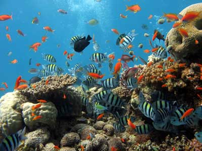

Tropical Oceans
By: David Yi, Brian Hsieh, and Hurki Hishoda
Introduction
The
ocean biome is one of the seven types of biomes found on Earth. Some others are desert, tropical rain forest, tundra and grassland. The ocean or marine biome is the world's largest biome, covering 70% of the Earth. It contains the Pacific, Indian, Arctic, Southern and Atlantic oceans. Tropical oceans, which include the central parts of the Atlantic and Pacific as well as a large portion of the Indian Ocean, are found near the equator, between the Tropics of Cancer and Capricorn.

Food Pyramid

Food Chains
Phytoplankton -> Zooplankton -> Jellyfish -> Squid
Bacteria -> Marine Worms -> Clownfish -> Stingrays